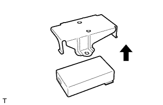

MAYDAY BATTERY > REMOVAL |
| 1. DISCONNECT CABLE FROM NEGATIVE BATTERY TERMINAL |
| Condition | Waiting Time |
| Vehicle enrolled in G-BOOK system | 6 minutes |
| Vehicle not enrolled in G-BOOK system | 1 minute |
| 2. REMOVE MAYDAY BATTERY WITH BRACKET |
 |
Detach the 4 claws and remove the cover.
 |
Remove the bolt and detach the 2 claws.
 |
Move the mayday battery with bracket as shown in the illustration.
Disconnect the connector and remove the mayday battery with bracket.
| 3. REMOVE MAYDAY BATTERY |
|  |
Remove the bracket from the mayday battery.